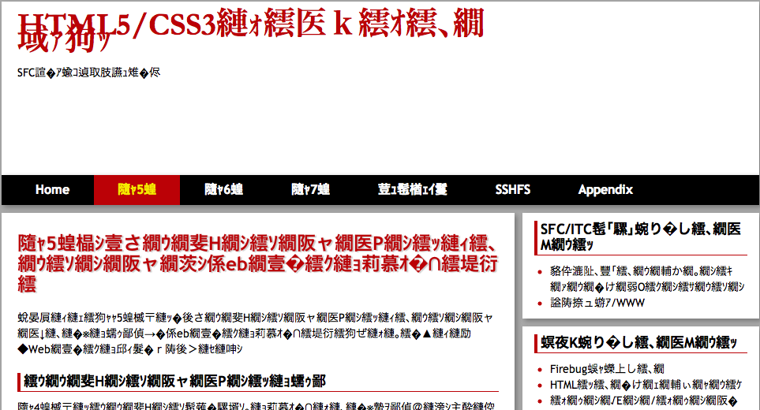

文字化けと文字コード
Webページを作成するにあたり，文字コードに問題がありページが正常に表示されないことがある． 本ページではWebで使われる文字コードについて解説する．
コンピュータにおける情報の表現方法
文字コードの話をする前に，コンピュータ上で文字列がどの様にして扱われているのかについて考える． コンピュータが情報を扱う最小単位はbit（ビット）であり， 1bitは「0」または「1」の2通りの値を持つ（「真(true)と偽(false)など，他の呼び方もある」）． コンピュータの世界では，この最小情報量であるbitを表現するのに2進数，8進数，16進数を使うことが多い．
2進数でデータを表現するとき，桁数がそのままビット数となり，例えば「000111」は6 bitsの情報量を持つ． 8進数では1桁が0〜7までの8通りあるので，8進数の1桁は3 bitsの情報量を持つことになる．よって8進数で「650」は 9 bitsの情報量を持つ．最後に，16進数では1桁を0〜9，A〜Fまでの16通りで表現するので，1桁で4 bitsの情報量を持つ． よって，16進数で「F134」は16 bitsの情報量を持つことになる． それぞれの表現方法で表せるデータの範囲は下表の通りである．
| n | 使用する文字 | 最小値（括弧内は10進数の値） | 最大値（括弧内は10進数） |
|---|---|---|---|
| 2進数 | 0, 1 | 0000（0） | 1111（15） |
| 8進数 | 0 〜 7 | 0000（0） | 7777（4095） |
| 16進数 | 0 〜 9, A 〜 F | 0000（0） | FFFF（65535） |
コンピュータにおける文字データの扱い方
コンピュータでは情報をbitと呼ばれる2進数の数値に変換していることを示したが， 2進数では数値しか表現することができない． では，アルファベットや日本語の文字はどのようにして表現すれば良いのだろうか？
答えは， 各数値と各文字の対応表を使って文字列を表現している のである． 例えば，最も良く使われる半角英数字の対応表では，以下のルールが適用される．
- 1文字は必ず8 bitsで表現する（先頭1bitは0固定とし，使わない）
- 0〜9の半角数字，a-z, A-Zの半角英字（大文字，小文字），その他ハイフン等の半角記号を表せる
- スペース（空白）や改行も文字として扱う
- 数値と文字の変換には ASCIIコード表 を用いる．
上記のルールを適用して半角英数字の文字列を16進数変換すると，下図の通りになる．

このように，コンピュータの中で数値を文字に変換するための表のことを 文字コード と呼ぶ． 文字コードにはたくさんの種類があるが，日本で一般的に見かける文字コードを下表に示す．
| 名称 | 表現できる文字種 | 主な利用用途 |
|---|---|---|
| ASCII | 半角英数文字，及び改行，スペースなど | コンピュータにおいて最も良く使われる文字コード． |
| Shift JIS | 半角英数字＋日本語 | 以前まで日本語Windowsで標準として使われていた（正確にはCP932）． |
| EUC-JP | 半角英数字＋日本語 | 以前まで日本語UNIXシステムで標準として使われていた． |
| ISO-2022-JP | 半角英数字＋日本語 | 日本語メールにおける業界標準．今でも広く使われており，携帯電話などではこの文字コード以外を正確に解釈できない ものも多い． |
| UTF-8 | あらゆる言語の文字（を目指している） | 昨今のコンピュータ業界での業界標準．現行のWindowsやMac OS X, Linuxは この文字コードが標準． |
他にも数多の文字コードがあるが，今後 特に理由がなければUTF-8を用いる事が望ましい． 本授業資料もUTF-8で作成することを前提としている．
文字化け
Webを巡回していたり，自分でWebページを作成していると，まれに以下のように壊れて表示されるページに出くわすことがある．
こうした現象のことを 文字化け と呼ぶ． 文字化けの原因は大抵以下のどれかが原因である
Webページの文字コードとページを表示しようとしているブラウザが解釈している文字コードが異なる
最も多いケースがこれである．これは，HTMLファイルを作成したときの文字コードと，ブラウザがHTMLファイルを 読み込むときの文字コードが異なることが原因である． ファイルの文字コードとブラウザの読み出す文字コードが異なると，文字の変換が正常に行われないため， 文字が正しく認識されなくなってしまう．
ブラウザは通常HTMLファイルのheadタグ中に書かれたmetaタグのcharset属性を参考に 文字コードを判別する．
<meta charset="UTF-8" />
charset属性が指定されていないHTMLファイルの場合，どの文字コードとして読み込むかは ブラウザによって異なる．例えば このページ は FirefoxやGoogle Chromeでは正常に日本語が表示されるが，Safariでは文字化けする． しかし，Safariの「表示メニュー -> テキストエンコーディング」でUTF-8を直接指定することで正常に表示される． 同じように，Firefoxでも「表示メニュー -> 文字エンコーディング」でUTF-8以外の文字コードを指定すると 意図的に文字化けを発生させることができる．
テキストエディタには文字エンコーディングを指定して保存する方法が提供されている． 例えば，Emacsであれば「C-x return f」に続いて保存したい文字コードを指定することで，任意の文字コードで保存することができるし， miや TeraPad 等のGUIテキストエディタでは，多くの場合ファイルを保存するときに文字コードを指定することができる（ 指定できない場合「名前を付けて保存」などでできる事が多い）． Webページを作成する場合は，閲覧者がどのブラウザでアクセスしてくるかは分からないため，HTML内で正しく文字コードを指定して おくべきである．
指定された言語のフォントがない
日本語フォントしかインストールされていないコンピュータで韓国語やアラビア語のページを閲覧したときに文字化けする． これは文字コードが正しくても文字化けしてしまう事例で，回避するには閲覧者に該当言語のフォントをインストールしてもらうか， そもそも文字を画像として貼り付けるといった対策をするしか無い．
まとめ
本ページでは，コンピュータにおけるデータの扱いと文字コードについて解説した． また，文字化けの原因とその対策について解説した．